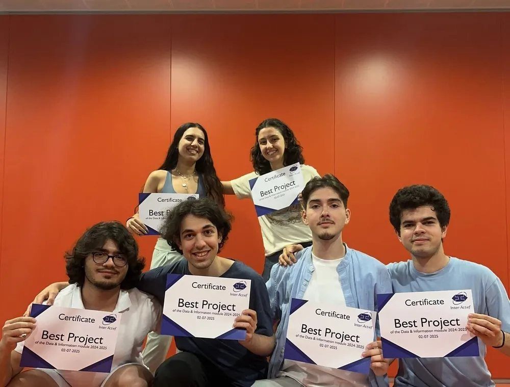
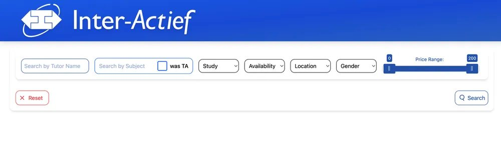
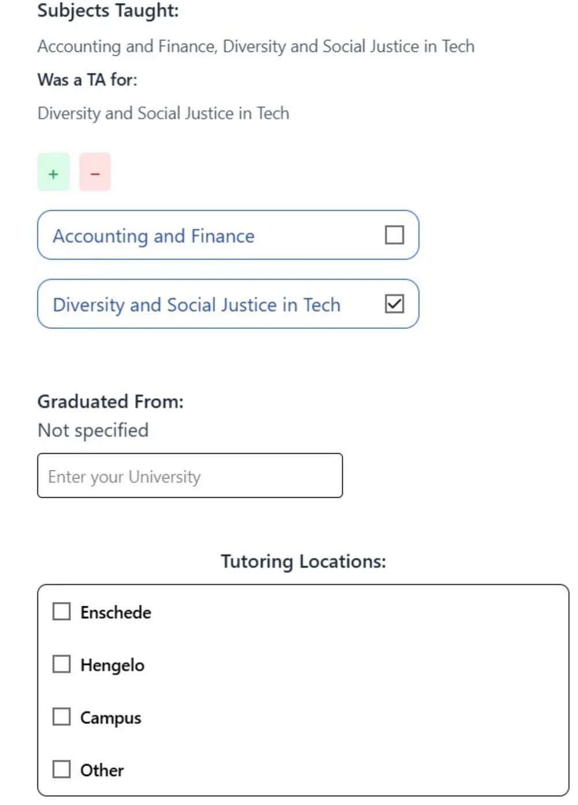

Tutoring platform for Inter-Actief
A tutoring platform for Inter-Actief, the study association for Computer Science at Twente. It won the Best Project Award of the module.
- Year
- 2024/25
- Context
- Module 4, Data & Information
- Team
- 6 students
- Client
- Inter-Actief
- Duration
- 10 weeks, Agile Scrum



What it does
Students find a tutor and book a session. Tutors publish a profile with the subjects they teach, the courses they were a teaching assistant for and where they can meet.
Students can search by name or subject and filter by study, availability, location and price, or show only tutors who were a TA for that course. New tutor accounts stay pending until an admin approves them.
How we worked
We built it in ten weeks with Scrum, starting from what the association actually needed and ending with a working product they could evaluate. The backend is Java and the frontend is Vue.js.
Result
Inter-Actief presented us with the Best Project Award of the Data & Information module in July 2025, and they plan to use the platform in practice.
Try it
Tutor search
Filter like on the real platform.
Made-up tutors, not real data.